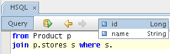

The HQL Editor is used to edit and execute HQL queries. It will be showed alongside the BeanShell Editor when a session factory is opened.
To execute a HQL query you have to place th caret inside the query and then press the execution toolbar button. If you'd like to execute just a part of a query (maybe a subquery), you can select that part and press the toolbar button (or use corresponding shortcut) Other actions are available from the editor's context menu, or by using the keyboard shortcuts.
The result of a query execution depends on the currently selected Output Window view.
The HQL Editor offers code completion on mapped objects and their properties.
It can be invoked by using CTRL+Space.

The shortcut keys can be customized in the options dialog (Tools | Options | Keymap | Hibernate Console)